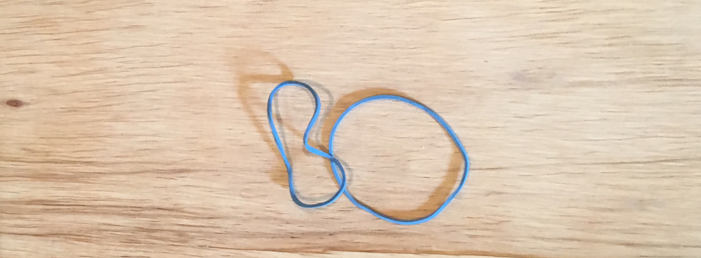

This is the personal web site of Bo Martin. It's just a static site using Github pages. You can't really do anything here but learn a little about Bo.
I live in East Tennessee. It's not that great. You wouldn't be interested. Kidding.
Professionally, I'm a software engineer and engineering manager. Learn more about me professionally here on LinkedIn. My current role is Director of Software Engineering at Lirio.
Personally, I'm a husband, uncle, brother, son and doggie daddy. I like playing and practicing golf. I enjoy traveling with my lovely wife, Mary Eva. I love good live music.
He's a Carolina Dog mix. He has some special ways including getting on top of stuff.